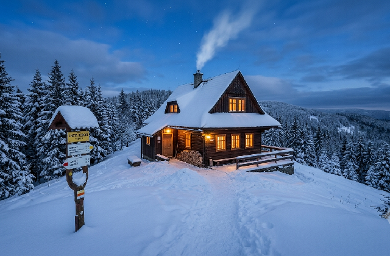

Náš tým
Hana Kovářová
Provozovatelka, vnučka zakladatele
Tomáš Beran
Kuchař a horský vůdce
Věra Malá
Recepce a rezervace
Postavena rukama, spravovaná srdcem.

Chatu založil horský vůdce Alois Kovář a dodnes ji vede jeho vnučka Hana s malým týmem místních. Dřevo na topení nosíme z vlastního lesa, chleba pečeme v chatě a večer je tu slyšet jen praskání ohně a vítr v korunách.
Snažíme se, aby si k nám lidé přišli odpočinout od spěchu — bez televize na pokojích, zato s dobrou knihou v jídelně a čerstvým čajem z bylinek, které rostou přímo za chatou.
Provozovatelka, vnučka zakladatele
Kuchař a horský vůdce
Recepce a rezervace